加速你的 Android 应用
来源：稀土掘金
原文链接 : Speed up your app
原文作者 : UDI COHEN
译者 : zijianwang90
几周之前，我在Droidcon NYC上有过一次关于Android性能优化的演讲。
我在这个演讲中花费了大量的时间，因为我想通过真实的例子展现性能问题，以及我是通过什么样的工具去发掘这些问题的。因为时间原因，在演讲中我不得不舍弃一半的内容。在这篇文章中，我会总结在演讲中我所讨论的所有内容，并且给出实例
现在，我们来逐一讨论我在演讲中提及的一些重点内容，希望我的阐述足够的清晰。首先，在我进行性能优化的时候我遵循如下原则：
原则
每当我遇到性能问题，或者尝试发现性能问题的时候，我会遵循如下原则：
- 坚持性能测试 – 不要用你的眼睛去优化性能。也许在你盯着同一个动画看了几次之后，你会开始相信他运行的越来越流畅了。数据不会说谎。在你优化你的代码之前以及之后，使用我们将要介绍的一系列工具，去多次的测试你的app到底性能几何。
- 使用低端设备 – 如果你想要你想暴露你应用的性能问题，低端设备往往会更加的容易。性能强大的设备往往不会太在意你应用上面的一些优化问题，且不是所有用户都在使用这些旗舰设备。
- 权衡 – 性能的优化始终围绕着权衡这两个字。你在某一个点上的优化可能会造成另一点上出现问题。在很多情况下，你会花大量的时间寻找并解决这些问题，但造成这些问题的原因也可能使因为例如bitmaps的质量，或是你没有使用正确的数据结构去存储你的数据。所以你要时刻准备好作出一定的牺牲
Systrace
Systrace是一个非常好但却有可能被你忽视的工具，这是因为开发者们往往不确定Systrace能够为他们提供什么样的信息。
Systrace会展示一个运行在手机上程序状况的概览。这个工具提醒了我们手机其实是一个可以在同一时间完成很多工作的电脑。在最近的一次SDK更新中，这个工具在数据分析能力上得到了提升，用以帮助我们寻找性能问题之所在。
下面让我们来看看Systrace长什么样子：
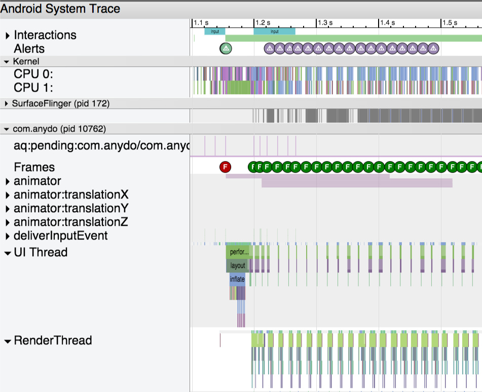
你可以通过Android Device Monitor Tool或者是命令行来生成Systrace文件，想了解更多猛戳此处。
在视频中，我向大家介绍了Systrace中不同区域的功能。当然最有趣的还是Alerts和Frames两栏，它们展示了通过手机来的数据而生成出来的可视化分析结果。让我们来选择最上方的alerts瞧瞧：
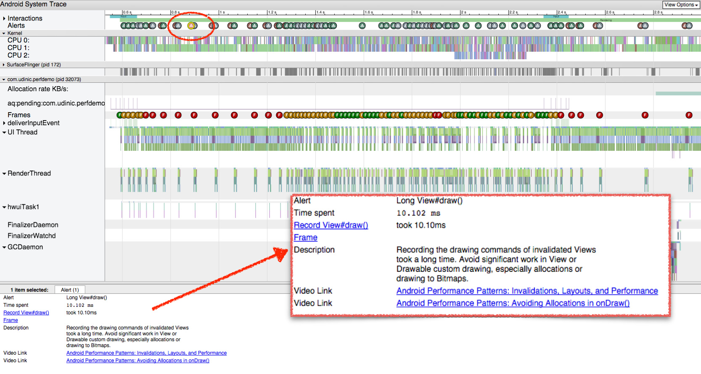
这个警告指出了，有一个View#draw()方法执行了比较长的时间。我们可以在下面看到问题的描述，链接，甚至是相关的视频。下面我们看Frames这一行，可以看到这里展示了被绘制出来的每一帧，并且用绿、黄、红三颜色来区分它们在绘制时的性能。我们选一个红色帧来瞅瞅：
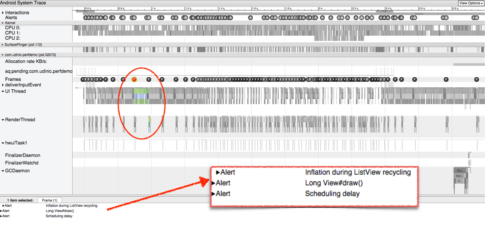
在最下方，我们看到了与这一帧所相关的一些警告。在这三个警告中，有一个是我们上面所提到的（View#draw()）。接下来我们在这一帧处放大并在下方展开“Inflation during ListView recycling”这条警告：
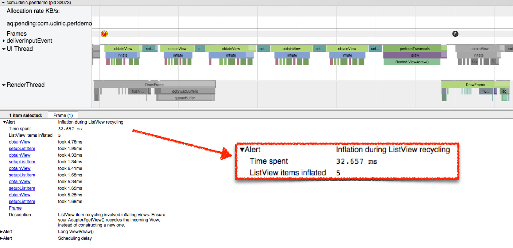
我们可以看到警告部分的总耗时，32毫秒，远高于了我们对保障60fps所需的16毫秒绘制时间。同时还有更多的ListView每个条目的绘制时间，大约是6毫秒每个条目，总共五个。而Description描述项中的内容会帮助我们理解问题，甚至提供问题的解决方案。回到我们上一张图片，我们可以在“inflate”这一个块区处放大，并且观察到底是哪些View在被填充过程中耗时比较严重。
下面是另外一个渲染过慢的实例：
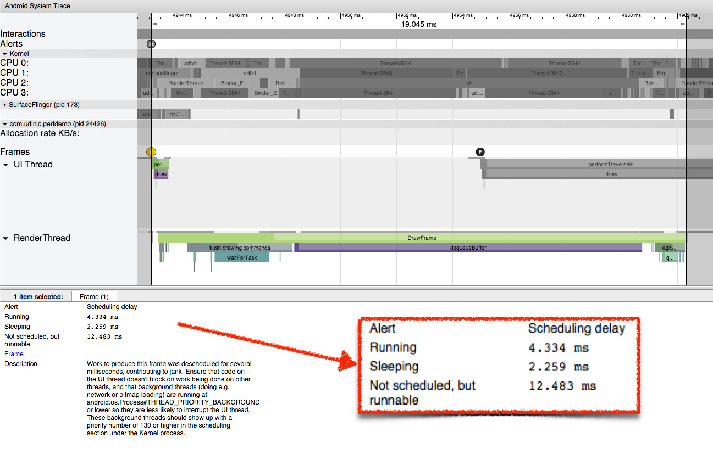
在选择了某一帧之后，我们可以按“m”键来高亮这一帧，并且在上方看到了这一部分的耗时，如图，我们看到了这一阵的绘制总共耗时超过19毫秒。而当我们展开这一帧唯一的一个警告时，我们发现了“Scheduling delay”这条错误。
Scheduling delay（调度延迟）的意思就是一个线程在处理一块运算的时候，在很长一段时间都没有被分配到CPU上面做运算，从而导致这个线程在很长一段时间都没有完成工作。我们选择这一帧中最长的一块，从而得到更加详细的信息：
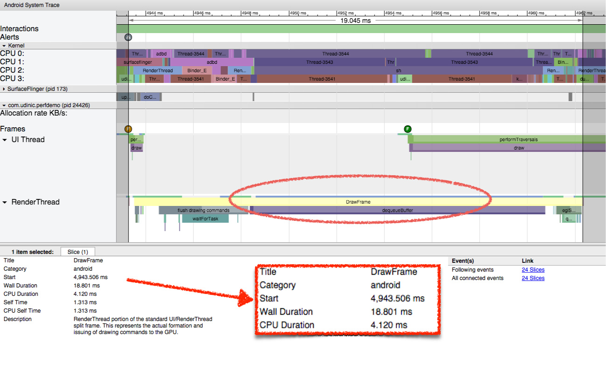
在红框区域内，我们看到了“Wall duration”，他代表着这一区块的开始到结束的耗时。之所以叫作“Wall duration”，是因为他就像是墙上的一个时钟，从线程的一开始就为你计时。
但是，CPU Duration一项中显示了实际CPU在处理这一区块所消耗的时间。
很显然，两个时间的差距还是非常大的。整个区块耗时18毫秒，而在这之中CPU只消耗了4毫秒的时间去运算。这就有点奇怪了，所以我们应该看一下在这整个过程之中，CPU去干吗了。
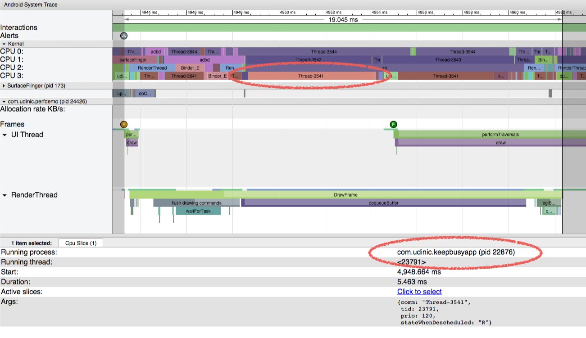
可以看到，所有四个线程都非常的繁忙。
选择其中的一个线程会告诉我们是哪个程序在占用他，在这里是一个包名为com.udinic.keepbusyapp的程序。在这里，由于另外一个程序占用CPU，导致了我们的程序未能获得足够的CPU资源。
但是这种情况其实是暂时的，因为被其他后台应用占用CPU的情况并不多见（- -），但仍有其他应用的线程或是主线程占用CPU。而Traceview也只能为我们提供一个概览，他的深度是有限的。所以要找到我们app中到底是什么让我们的CPU繁忙，我们还要借助另一个工具——Traceview。
TraceView
Traceview是一个性能测试工具，展示了所有方法的的运行时间。下面让我们来瞅瞅他是啥样的：
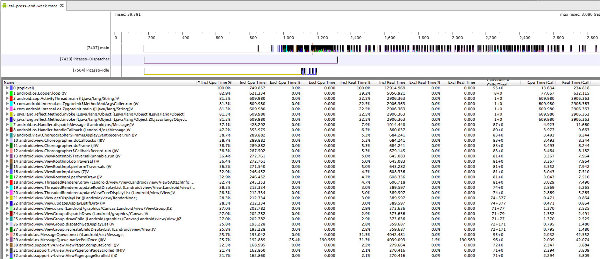
这个工具可以从·Android Device Monitor·中打开也可以通过代码打开。更多的消息信息请看这里。
下面让我们来看看每一列的含义：
- Name – 方法名，以及他们在上面图表中所对应的颜色。
- Inclusive CPU Time – CPU在处理这个方法以及所有子方法（如被他调用的所有方法）的总耗时。
- Exclusive CPU Time – CPU在处理这一个单独方法的总耗时。
- Inclusive/Exlusive Real Time – 从方法的开始执行到执行结束的总耗时，和Systrace中的“Wall duration”类似
- Calls+Recursion – 这个方法被调用的次数，以及被递归调用的次数。
- CPU/Real time per Call – 在处理这个方法时的CPU耗时的平均值以及实际耗时的平均值。另外的列展示了这个方法所有调用的累计耗时
我打开一个滑动不太顺滑的应用。开启记录，滑动一点后停止记录。展开getView()方法，如下图：
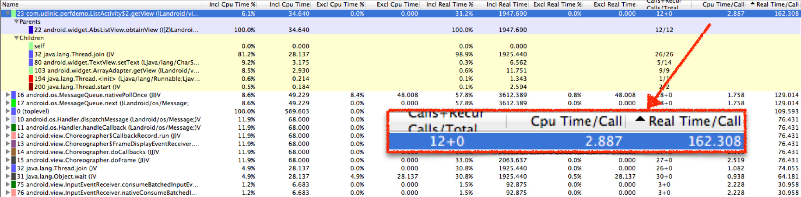
这个方法被调用了12次，每次CPU会消耗3毫秒左右，但是每次调用的总耗时却高达162毫秒！绝对有问题啊！
而看看这个方法的children，我们可以看到这其中的每个方法在耗时方面是如何分布的。Thread.join()方法战局了98%的inclusive real time。这个方法在等待另一个线程结束的时候被调用。在Children中另外一个方法就是Tread.start()方法，而之所以整个方法耗时很长，我猜测是因为在getView()方法中启动了线程并且在等待它的结束。
但是这个线程在哪儿？
我们在getView()方法中并不能看到这个线程做了什么，因为这段逻辑不在getView()方法之中。于是我找到了Thread.run()方法，就是在线程被创建出来时候所运行的方法。而跟随这个方法一路向下，我找到了问题的元凶。
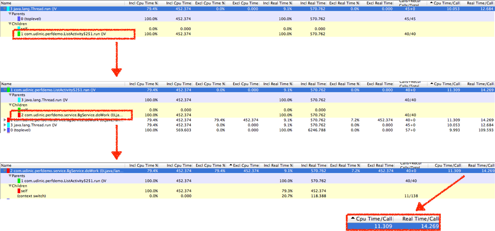
我发现了BgService.doWork()方法的每次调用花费了将近14毫秒，并且有四十个这东西！而且getView()中还有可能调用多次这个方法，这就解释了为什么getView()方法执行时间如此之长。这个方法让CPU长时间的保持在了繁忙状态。而看看Exclusive CPU time，我们可以看到他占据了80%的CPU时间！此外，根据Exclusive CPU time排序，可以帮我们更好的定位那些耗时很长的方法，而他们很有可能就是造成性能问题的罪魁祸首。
关注这些耗时方法，例如getView()，View#onDraw()等方法，可以很好的帮助我们寻找为什么应用运行缓慢的原因。但有些时候，还会有一些其他的东西来占用宝贵的CPU资源，而这些资源如果被运用在UI的绘制上，也许我们的应用会更加流畅。Garbage Collector垃圾回收机制会不时的运行，回收那些没用的对象，通常来讲这不会影响我们在前台运行的程序。但如果GC被运行的过于频繁，他同样可以影响我们应用的执行效率。而我们该如何知道回收的是否过于频繁了呢…
内存调优 Memory Profiling
Android Studio在最近的更新中给予了我们更加强大的工具去分析性能问题。在底部Android选项中的Memory选项卡，会显示有多大的数据在什么时候被分配到了堆内存之中，他是长成这个样子的：
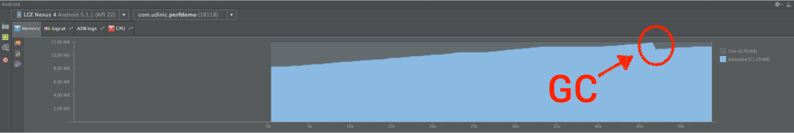
而当图表中出现一个小的下滑的时候，说明GC回收发生了，他清除了不必要的对象并且腾出了一定的堆空间。而在这张图表的左侧有两个工具供我们使用，Head dump和Allocation Tracker。
Heap dump
为了找出到底是什么正在占用我们的堆内存，我们可以使用左边的heap dump按钮。他会提供一个堆内存占用情况的快照，并且会在Android Studio中打开一个单独的报告界面。
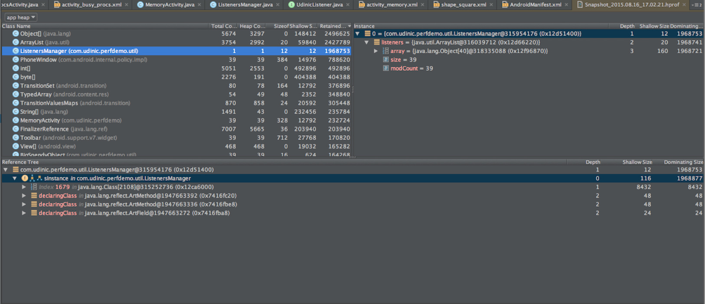
在左侧，我们看到一个图标展示了堆中所有的实例，按照类进行分组。而对于每一个实例，会展示有多少个实例的对象被分配到堆中，以及他们的所占用的空间（Shallow size浅尺寸），以及这些对象在内存中仍然占用的空间，后者告诉了我们多少的内存空间将会被释放如果这些实例被释放。这个工具可以让我们直观的观察处内存是被如何占用的，帮助我们分析我们使用的数据结构和对象之间的关系，以便发现问题并使用更加高效的数据结构，解开和对象之间的关联，并且降低Ratained Memory的占用。而最终目的，就是尽可能的降低我们的内存占用。
回过头来看图表，我们发现MemoryActivity存在39个实例，这对于一个Activity来说有点奇怪。在右边选择其中的一个实例，会在下方看到所有的对这个实例的引用树状列表。
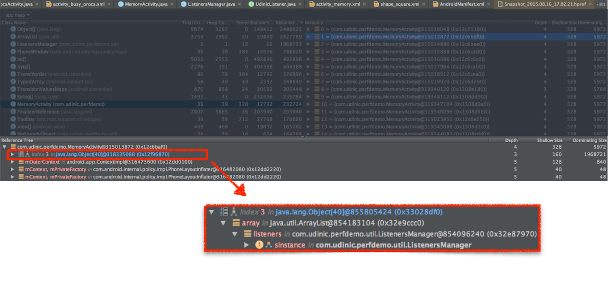
其中一个是ListenersManager对象中的一个集合。而观察这个activity的其他实例，就会他们都因为这个对象而被保留在了内存之中。这也解释了为什么这些对象占用了如此多的内存：
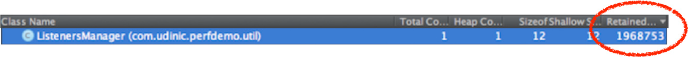
这个现象就叫做“内存泄露”，我们的activity已经被销毁，但是他们的对象却因为始终被引用着而无法被垃圾回收。我们可以避免这种情况，例如确保这些对象再被销毁后不会被其他对象一直引用着。在我们这个例子中，在Activity被销毁后，ListernesManager并不需要保持着对这些对象的引用。所以解决办法就是在onDestroy()回调方法中移除这些引用。
内存泄露以及其他较大的对象会在堆中占据很多的控件，它们减少着可用内存的同时也频繁的造成垃圾回收。而垃圾回收又回造成CPU的繁忙，而堆内存并不会变得更大，最终就会导致更悲剧的结果发生：OutOfMemoryException内存溢出，并导致程序崩溃。
另外一个更先进的工具就是Eclipse Memory Analyzer Tool (Eclipse MAT)：
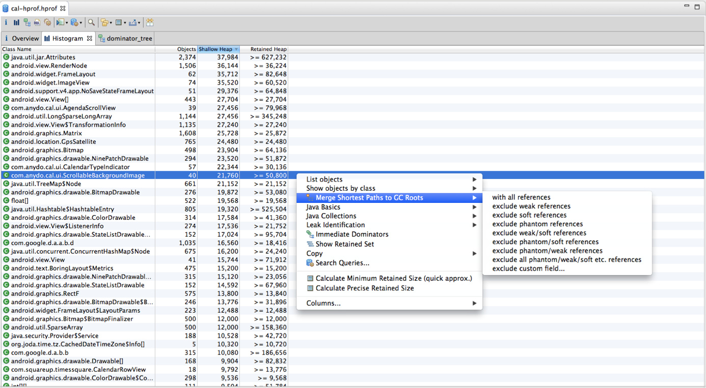
这个工具可以做所有Android Studio可以做的，并且辨别可能出现的内存泄露，以及提供更加高级的搜索功能，例如搜索所有大于2MB的Bitmap实例，或是搜索所有空的Rect对象。
另外一个很好的工具是LeakCanary，是一个第三方库，可以观察应用中的对象并且确保它们没有造成泄漏。而如果造成泄漏了，会有一个推送来提醒你在哪里发生了什么。
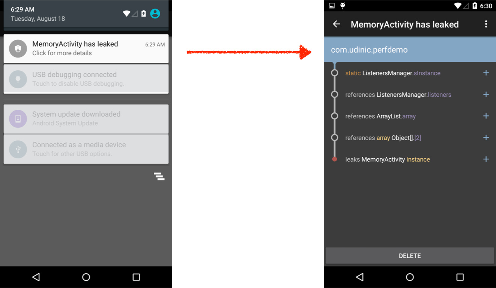
Allocation Tracker
我们可以在内存图表的左侧找到Allocation Tracker的启动和停止按钮。他会生成一个在一定时间内被生成的所有实例的报告，并且按照类分型分组：
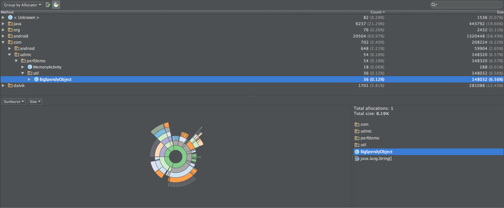
或者按照方法分组：
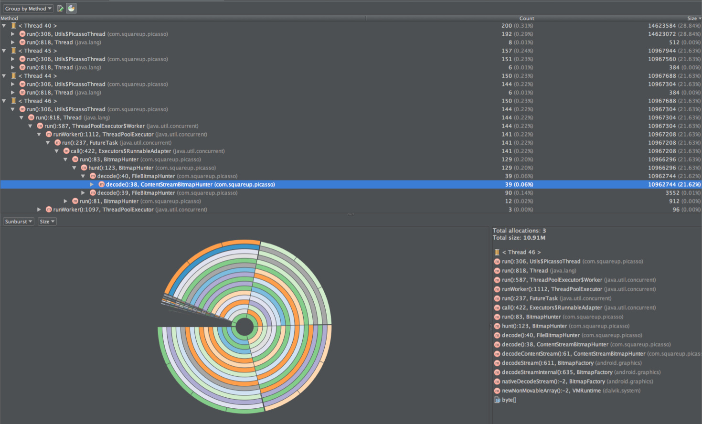
同时它还能通过美观的可视化界面，告诉我们哪些方法或类拥有最多的实例。
利用这些信息，我们可以找到哪些占用过多内存，引发过多次垃圾回收且又对耗时非常敏感的方法。我们也可以利用这个工具找到很多短命的相同类的实例，从而可以考虑使用对象池的思想去尽量的减少过多的实例被创建。
常见内存小技巧
以下是一些我写代码时候遵循的规律或是技巧：
枚举在性能问题上一直是一个被经常讨论的话题。这里是一个讨论枚举的视频，指出了枚举所消耗的内存空间，这还有一段关于这个视频的讨论，当然其中存在着一些误导。但是回过头来，枚举真的比一般的常量更加占用空间吗？肯定的。但是这一定不好吗？未必。如果你在编写一个library库并且需要很强的类型安全性，那么也许可以使用枚举而非其他办法，例如@IntDef。而如果你只是有一堆的常量，使用枚举也许就不能么明智了。还是那句话，在你做决定之前一定要权衡与取舍。
自动装箱 – 自动装箱是一个从原始数据类型到对象型数据的装箱过程（例如int到Integer）。每当一个原始类型数据被装箱到一个对象类型数据，一个新的对象就产生了（震惊吧。。）。所以如果发生了很多次的自动装箱，势必会加快GC的执行频率，而且自动装箱是很容易被我们忽视的。而解决办法，在使用这些类型的时候尽量一致，如果你在应用中完全使用原始数据类型，那么尽量避免他被无缘无故的自动封装。你可以使用我们上面提到的memery profiling工具去寻找这些过于大量的对象类型数据，也可以通过Traceview去寻找类似Integer.valueOf()，Long.valueOf()这样的方法来判断是否发生了大量不必要的自动封装。
HashMap vs ArrayMap / Sparse*Array – 既然提到了自动装箱的问题，那么使用HashMap的话，就需要我们使用对象类型作为键。而如果我们在整个应用中使用的都是基本数据类型的“int”，那么在我们使用HashMap时候就会发生自动装箱，而这时也许我们就可以考虑使用SparseIntArray。而假如我们仍然需要键为对象类型，那么我们可以使用ArrayMap。ArrayMap和HashMap很类似，但是在底层的实现原理却不尽相同，这也会让我们更加高效的使用内存，但要付出一定的性能代价。两种方法都会比HashMap更加节省内存空间，但是相比于HashMap，查询和增删的速度上会有一定的牺牲。当然，除非你具有至少1000条的数据源，否则在运行时也不会对速度造成太大的影响，这也是你使用他们替代HashMap的原因之一。
注意Context – 在我们前面也看到了，Activity是非常容易造成内存泄露的。在Android中，最容易造成内存泄露的当属Activity。并且这些内存泄露会浪费大量的内存，因为他们持有着他们UI中所有的View，而这些View通常会占据很多的控件。在开发过程中的很多操作需要Context，而我通常也会使用Activity来传递。所以一定要搞清楚你对这个Activity做了什么。如果一个引用被缓存起来了，且这个对象的生命周期比你的Activity还要长，那么在我们解除这个引用之前，就会造成内存泄露了。
避免非静态 – 当我们创建非静态内部类，并且初始化它的时候，在其内部会创建一个外部类的隐式引用。而如果内部类的生命周期比外部类还要长，那么外部类也同样会被保留在内存之中，尽管我们已经完全不需要它了。例如，在Activity内创建了一个继承自AsyncTask的内部类，完后在Activity运行的时候启动这个async task，再杀掉Activty。那么这时候这个async task会保持着这个Activity直到执行结束。而解决办法也很简单，不要这么做，尽量使用静态内部类。
监测GPU（GPU Profiling）
在AndroidStudio 1.4中的一个全新工具，就是可以查看GPU绘制。
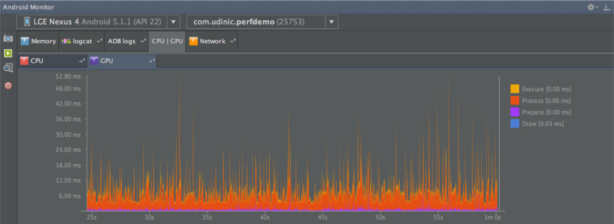
每一条线意味着一帧被绘制出来，而每条线中的不同颜色又代表着在绘制过程中的不同阶段：
- Draw (蓝色) - 代表着View#onDraw()方法。在这个环节会创建/刷新DisplayList中的对象，这些对象在后面会被转换成GPU可以明白的OpenGL命令。而这个值比较高可能是因为view比较复杂，需要更多的时间去创建他们的display list，或者是因为有太多的view在很短的时间内被创建。
- Prepare (紫色) – 在Lollipop版本中，一个新的线程被加入到了UI线程中来帮助UI的绘制。这个线程叫作RenderThread。它负责转换display list到OpenGL命令并且送至GPU。在这过程中，UI线程可以继续开始处理后面的帧。而在UI线程将所有资源传递给RenderThread过程中所消耗的时间，就是紫色阶段所消耗的时间。如果在这过程中有很多的资源都要进行传递，display list会变得过多过于沉重，从而导致在这一阶段过长的耗时。
- Process (红色) – 执行Display list中的内容并创建OpenGL命令。如果有过多或者过于复杂的display list需要执行的话，那么这阶段会消耗较长的时间，因为这样的话会有很多的view被重绘。而重绘往往发生在界面的刷新或是被移动出了被覆盖的区域。
- Execute (黄色) – 发送OpenGL命令到GPU。这个阶段是一个阻塞调用，因为CPU在这里只会发送一个含有一些OpenGL命令的缓冲区给GPU，并且等待GPU返回空的缓冲区以便再次传递下一帧的OpenGL命令。而这些缓冲区的总量是一定的，如果GPU太过于繁忙，那么CPU则会去等待下一个空缓冲区。所以，如果我们看到这一阶段耗时比较长，那可能是因为GPU过于繁忙的绘制UI，而造成这个的原因则可能是在短时间内绘制了过于复杂的view。
在Marshmallow版本中，有更多的颜色被加了进来，例如Measure/Layout阶段，input handling输入处理，以及一些其他的：
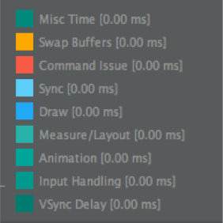
在使用这些功能之前，你需要在开发者选项中开启GPU rendering(GPU呈现模式分析)：
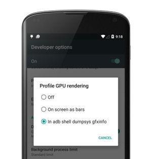
接下来我们就可以通过以下这条adb命令得到我们想要得到的所有信息：
adb shell dumpsys gfxinfo<PACKAGE_NAME>
我们可以自己收集这些信息并创建图表。这个命令也会打印出一些其他有用的信息，例如view层级中的层数，display lists的大小等等。在Marshmallow中，我们也会得到更多的信息：
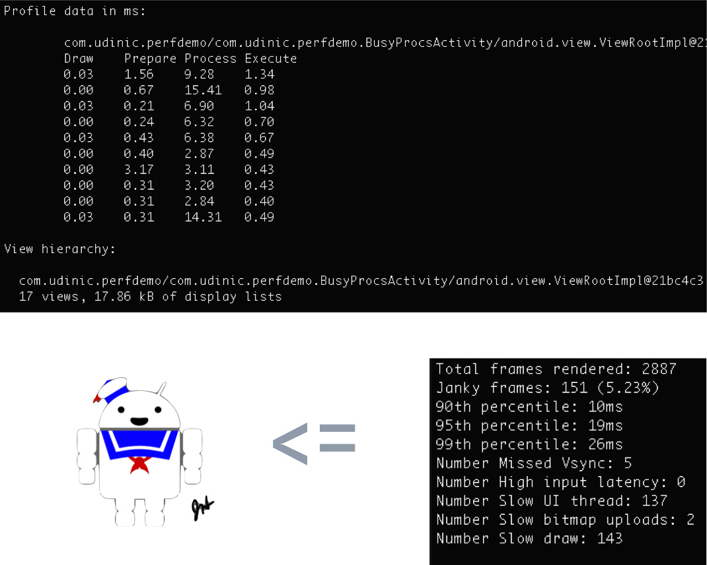
如果我们需要自动化测试我们的app，那么我们可以自己创建服务器去运行在特定节点执行这些命令（如列表滚动，重度动画等），并观察这些数值的变动。这可以帮助我们找出在哪里出现了性能的下降，并且产品上线之前找到问题的所在。我们也能够通过”framestats”关键字来找到更多更加精确的数据，这里有更详尽的解释。
但这可不是获取GPU Rendering数据的唯一方式！
我们在开发者选项中看过了GPU呈现模式分析内的Profile GPU Rendering”选项后，还有另外一个选项就是”On screen as bars”（在屏幕上显示为条形图）。打开这个后，我们就可以直观的看到每一帧在绘制过程中所消耗的时间，绿色的横线则代表16ms的60fps零界值。
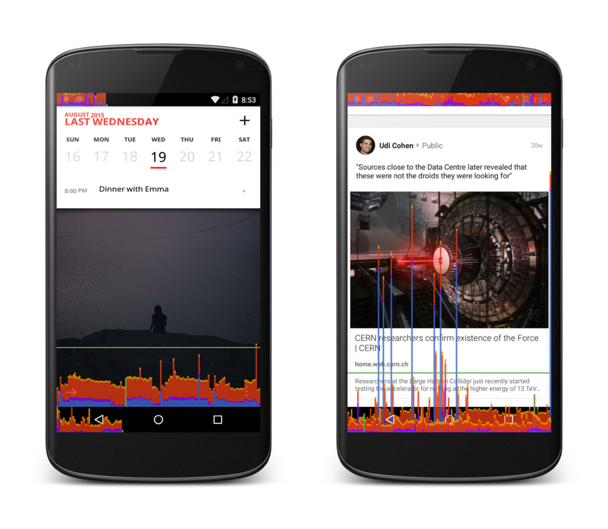
在右边的例子中，我们可以看到很多帧都超出了绿线，这也意味着它花了多余16毫秒的时间去绘制。而蓝色占据了这些线条的主体，我们知道这可能是因为过多或是过于复杂的view在被绘制。在这种情况下，当我滑动列表，因为列表中view的结构比较复杂，有一些view已经被绘制完成而一些因为过于复杂还处于绘制阶段，而这可能就是造成这些帧超过绿线的原因——绘制起来实在太复杂了。
Hierarchy Viewer
我非常喜欢这个工具，同时也因为那么多人完全不用而感到一丝的悲凉。
使用Hierarchy Viewer，我们可以获得性能数据，观察View层级中的每一个View，并且可以看到所有View的属性。我们同样可以导出theme数据，这样可以看到每一个style中的属性值，但是我们只能在单独运行Hierarchy Viewer的时候才能这么干，而非通过Android Monitor。通常在我进行布局设计以及布局优化的时候，我会使用到这个工具。
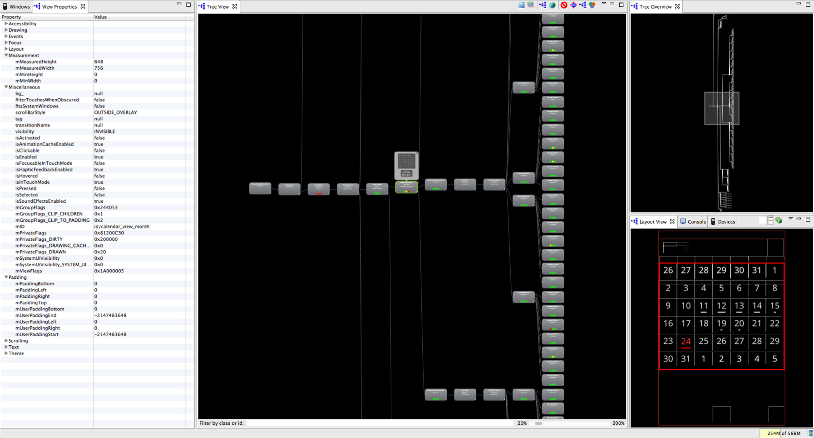
在正中间我们看到的树状结构就代表了View的层级。View的层级可以很宽，但如果太宽的话（10层左右），也许会在布局和测量阶段消耗大量的性能。在每一次View通过View#onMeasure()方法测量的时候，或是通过View#onLayout()方法布局他的所有子view的时候，这些方法又回传递到它所有的子view上面并且重头来过。有的布局会将上述步骤做两次，例如RelativeLayout以及某些通过配置的LinearLayout，而如果它们又层层嵌套，那么这些方法的传递会大量的增加。
在右下方，我们看到了一个我们布局的“蓝图”，标注了每一个view的位置。当我们点击这里（或者从树状结构中），我们会在左侧看到他所有的属性。在设计布局时候，有时候我不确定为什么一个view被摆在那里，而使用这个工具，我可以在树状图中找到这个view，选择，并观察他在预览窗口中的位置。我还通过view在屏幕上最终的绘制尺寸，来设计有趣的动画，并且使用这些信息让动画或者View的位置更加的精准。我也可以通过这个工具来寻找被其他View不小心盖住从而找不到的View，等等等等。
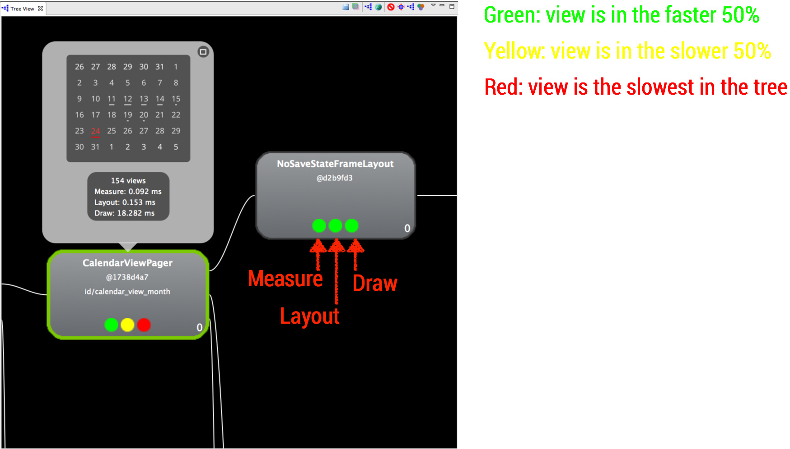
对于每一个view我们可以获得他测量、布局以及绘制的用是和它所包含的所有子view。在这里颜色代表了这个view在绘制过程中，相比树中其他view的性能表现，这是我们找到这些性能不足view的最佳途径。鉴于我们能够看到所有view的预览，我们可以沿着树状图，跟随view被创建的顺序，找寻那些可以被舍弃的多余步骤。而其中之一，也是对性能影响非常大的，就是过度绘制。
过度绘制
正如我们在GPU Profiling部分看到的，在Execute黄色阶段，如果GPU有过多的东西要在屏幕上绘制，整个阶段会消耗更多的时间，同事也增加了每一帧所消耗的时间。过度绘制往往发生在我们需要在一个东西上面绘制另外一个东西，例如在一个红色的背景上画一个黄色的按钮。那么GPU就需要先画出红色背景，再在他上面绘制黄色按钮，此时过度绘制就是不可避免的了。如果我们有太多层需要绘制，那么则会过度的占用GPU导致我们每帧消耗的时间超过16毫秒。
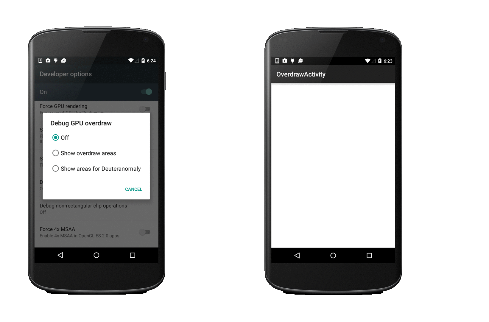
使用“Debug GPU Overdraw”（调试过度绘制）功能，所有的过度绘制会以不同颜色的形式展示在屏幕上。1x或是2x的过度绘制没啥问题，即便是一小块浅红色区域也不算太坏，但如果我们看到太多的红色区域在屏幕上，那可能就有问题了，让我们来看几个例子：
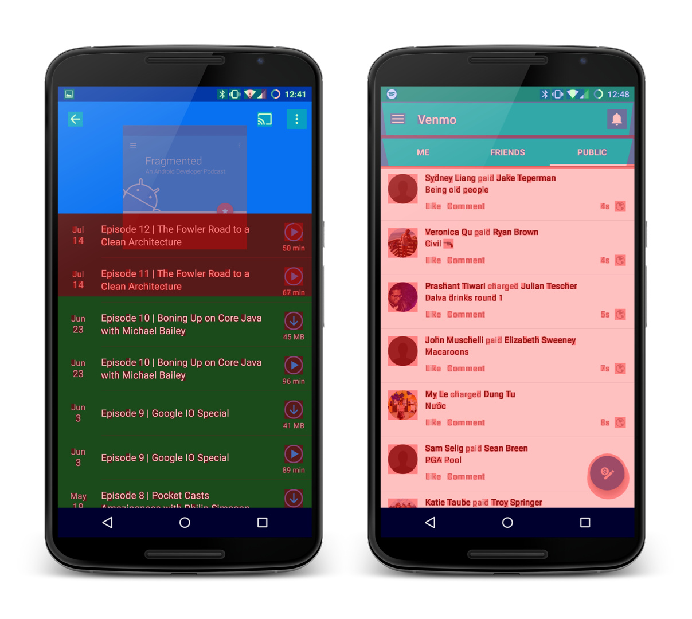
在左边的例子中，我们看到列表部分是绿色的，通常还OK，但是在上方发生覆盖的区域是一片红色，那就有问题了。在右边的例子中，整个列表都是浅红色。在两个例子中，都各有一个不透明的列表存在2x或3x的过度绘制。这些过度绘制可能发生在我们给Activity或Fragment设置了全屏的背景，同时又给ListView以及ListView的条目设置了背景色。而通过只设置一次背景色即可解决这样的问题。
注意：默认的主题会为你指定一个默认的全屏背景色，如果你的activity又一个不透平的背景盖住了默认的背景色，那么你可以移除主题默认的背景色，这样也会移除一层的过度绘制。这可以通过配置主题配置或是通过代码的方法，在onCreate()方法中调用getWindow().setBackgroundDrawable(null)方法来实现。
而使用Hierarchy Viewer，你可以导出一个所有view层级的PSD文件，在Photoshop中打开，并且调查不同的layout以及不同的层级，也能够发现一些在布局中存在的过度绘制。而使用这些信息可以移除不必要的过度绘制。而且，不要看到绿色就满足了，冲着蓝色去！
透明度
使用透明度可能会影响性能，但是要去理解为什么，让我们瞅瞅当我们给view设置透明度的时候到底发生了什么。我们来看一下下面这个布局：
我们看到这个layout中又三个ImageView并且重叠摆放。在使用最常规的设置透明度的方法setAlpha()时，方法会传递到没一个子view上面，在这里是每一个ImageView。而后，这些ImageView会携带新的透明值被绘制入帧缓冲区。而结果就是：
这并不是我们想要看到的结果。
因为每一个ImageView都被赋予了一个透明值，导致了本应覆盖的部分被融合在一起。幸运的是，系统为我们解决了这个问题。布局会被复制到一个非屏幕区域缓冲区中，并且以一个整体来接收透明度，其结果再被复制到帧缓冲区。结果就是：
但是，我们是要付出性能上面的代价的。
假如在帧缓冲区内绘制之前，还要在off-screen缓冲区中绘制一遍的话，相当于增加了一层不可见的绘制层。而系统并不知道我们是希望这个透明度以何种的形式去展现，所以系统通常会采用相对复杂的一种。但是也有很多设置透明度的方法能够避免在off-screen缓冲区中的复杂操作：
- TextView – 使用setTextColor()方法替代setAlpha()。这种方法使用Alpha通道来改变字色，字也会直接使用它进行绘制。
- ImageView – 使用setImageAlpha()方法替代setAlpha()。原理同上。
- 自定义控件 – 如果你的自定义控件并不支持相互覆盖，那就无所谓了。所有的子view并不会想上面的例子中一样，因为覆盖而相互融合。而通过复写hasOverlappingRendering()并将其返回false后，便会通知系统使用最直接的方式绘制view。同时我们也可以通过复写onSetAlpha()返回true来手动操控设置透明度后的逻辑。
硬件加速
在Honeycomb版本中引入了硬件加速（Hardware Accleration）后，我们的应用在绘制的时候就有了全新的绘制模型。它引入了DisplayList结构，用来记录View的绘制命令，以便更快的进行渲染。但还有一些很好的功能开发者们往往会忽略或者使用不当——View layers。
使用View layers（硬件层），我们可以将view渲染入一个非屏幕区域缓冲区（off-screen buffer，前面透明度部分提到过），并且根据我们的需求来操控它。这个功能主要是针对动画，因为它能让复杂的动画效果更加的流畅。而不使用硬件层的话，View会在动画属性（例如coordinate, scale, alpha值等）改变之后进行一次刷新。而对于相对复杂的view，这一次刷新又会连带它所有的子view进行刷新，并各自重新绘制，相当的耗费性能。使用View layers，通过调用硬件层，GPU直接为我们的view创建一个结构，并且不会造成view的刷新。而我们可以在避免刷新的情况下对这个结构进行进行很多种的操作，例如x/y位置变换，旋转，透明度等等。总之，这意味着我们可以对一个让一个复杂view执行动画的同时，又不会刷新！这会让动画看起来更加的流畅。下面这段代码我们该如何操作：
// Using the Object animator
view.setLayerType(View.LAYER_TYPE_HARDWARE,null);
ObjectAnimator objectAnimator=ObjectAnimator.ofFloat(view,View.TRANSLATION_X,20f);
objectAnimator.addListener(newAnimatorListenerAdapter(){
@Override
publicvoidonAnimationEnd(Animator animation){
view.setLayerType(View.LAYER_TYPE_NONE,null);
});
objectAnimator.start();
// Using the Property animator
view.animate().translationX(20f).withLayer().start();
很简单，对吧？
是的，但是再使用硬件layers的时候还是有几点要牢记在心：
回收 – 硬件层会占用GPU中的一块内存。只在必要的时候使用他们，比如动画，并且事后注意回收。例如在上面ObjectAnimator的例子中，我们增加了一个动画结束监听以便在动画结束后可以移除硬件层。而在Property animator的例子中，我们使用了withLayers()，这会在动画开始时候自动创建硬件层并且在结束的时候自动移除。
如果你在调用了硬件View layers后改变了View，那么会造成硬件硬件层的刷新并且再次重头渲染一遍view到非屏幕区域缓存中。这种情况通常发生在我们使用了硬件层暂时还不支持的属性（目前为止，硬件层只针对以下几种属性做了优化：otation、scale、x/y、translation、pivot和alpha）。例如，如果你另一个view执行动画，并且使用硬件层，在屏幕滑动他们的同时改变他的背景颜色，这就会造成硬件层的持续刷新。而以硬件层的持续刷新所造成的性能消耗来说，可能让它在这里的使用变得并不那么值。
而对于第二个问题，我们也有一个可视化的办法来观察硬件层更新。使用开发者选项中的“Show hardware layers updates”（显示硬件层更新）
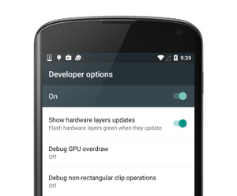
当打开该选项后，View会在硬件层刷新的时候闪烁绿色。在很久以前我有一个ViewPager在滑动的时候有点不流畅。在开发者模式启动这个选项后，我再次滑动ViewPager，发现了如下情况：
左右两页在滑动的时候完全变成了绿色！
这意味着他们在创建的时候使用了硬件层，而且在滑动的时候也界面也进行了刷新。而当我在背景上面使用时差效果并且让条目有一个动画效果的时候，这些处理确实会让它进行刷新，但是我并没有对ViewPager启动硬件层。在阅读了ViewPager的源码后，我发现了在滑动的时候会自动为左右两页启动一个硬件层，并且在滑动结束后移除掉。
在两页间滑动的时候创建硬件层也是可以理解的，但对我来说小有不幸。通常来讲加入硬件层是为了让ViewPager的滑动更加流畅，毕竟它们相对复杂。但这不是我的app所想要的，我不得不通过一些编码来移除硬件层。
硬件层其实并不是什么酷炫的东西。重要的是我们要理解他的原理并且合理的使用他们，要不然你确实会遇到一些麻烦。
DIY
在准备上述这一系列例子的过程中，我进行了很多的编码去模拟这些情景。你可以在这个Github项目中找到这些代码，同时也可以在Google Play中找到。我用不同的Activity区分了不同的情景，并且尽量将他们的用文档解释清楚，以便于帮助大家理解不同的Activity中是出现哪种问题。大家可以边阅读各个Activity的javadoc的同时，利用我们前面讲到的工具去玩儿这个App。
更多信息
随着安卓系统的不断进化，你有话你的应用的手段也在不断变多。很多全新的工具被引入到了SDK中，以及一些新的特性被加入到了系统中（好比硬件层这东西）。所以与时俱进和懂得取舍是非常重要的。
这是一个非常棒的油管播放列表，叫Android Performance Patterns，一些谷歌出品的短视频，讲解了很多与性能相关的话题。你可以找到不同数据结构之间的对比（HashMap vs ArrayMap），Bitmap的优化，网络优化等等，吐血推荐！
加入Android Performance Patterns的G+社群，和大家一起讨论，分享心得，提出问题！
更多有意思的链接：
- 了解安卓中的图形结构（Graphics Architecture）。例如关于UI的渲染，不同的系统组件，比如SurfaceFlinger，以及他们之间是如何交互的。比较长，但是值得一看！ * Google IO 2012上的一段演讲，展示了绘制模型（Drawing model）是如何工作的。
- 一段来自Devoxx 2013的关于Anrdroid性能的研讨，展示了一些在Anrdroid 4.4对绘制模型的一些优化，并且通过demo的形式展示了对不同优化工具的使用（Systrace，Overdraw等等）。
- 一篇非常好的关于“预防性优化”（Preventative Optimizations）的文章，阐述了他和“不成熟的优化”有和区别。很多的开发者并不优化他们的代码，因为他们认为这些影响并不明显。但是记住，问题也是积少成多的。如果你有机会去优化很小的一点，即便是非常微不足道的一点，也是应该的。
- 安卓中的内存管理 – 一个2011年的Google IO视频，仍然值得一看。视频展示了安卓是如何管理不同app的内存的，以及如何使用Eclipse MAT去发现问题。
- 一个叫做Romain Guy的谷歌工程师的案例研究，通过优化一个第三方的推特客户端。在这个研究中，Romain展示了他是如何发现问题的，并且建议了相应的解决方案。另一篇文章跟进了这个问题，展示了这个app在重新制作后的一些其他问题。
我真心希望你通过这篇文章获得到了足够丰富的信息和信心，从今天开始优化你的应用吧！
尝试用工具去记录，并通过一些开发者选项中的选项，开搞吧。欢迎来G+上分享你在安卓性能优化上面的心得！